산업위생관리기사 (2022-04-24 기출문제)
1과목: 산업위생학개론
1. 현재 총 흡음량이 1200 sabins인 작업장의 천장에 흡음 물질을 첨가하여 2400 sabins를 추가할 경우 예측되는 소음감음량은(NR)은 약 몇 dB인가?
- 2.6
- 3.5
- 4.8
- 5.2
(정답률: 53%)

2. 젊은 근로자에 있어서 약한 쪽 손의 힘은 평균 45kp라고 한다. 이러한 근로자가 무게 8kg인 상자를 양손으로 들어 올릴 경우 작업강도 (%MS)는 약 얼마인가?
- 17.8%
- 8.9%
- 4.4%
- 2.3%
(정답률: 62%)
3. 누적외상성 질환(CTDs) 또는 근골격계질환(MSDs)에 속하는 것으로 보기 어려운 것은?
- 건초염(Tendosynoitis)
- 스티븐스존슨증후군(Stevens Johnson syndrome)
- 손목뼈터널증후군(Carpal tunnel syndrome)
- 기용터널증후군(Guyon tunnel syndrome)
(정답률: 71%)
4. 심리학적 적성검사에 해당하는 것은?
- 지각동작검사
- 감각기능검사
- 심폐기능검사
- 체력검사
(정답률: 62%)
5. 산업위생의 4가지 주요 활동에 해당하지 않는 것은?
- 예측
- 평가
- 관리
- 제거
(정답률: 69%)
6. 사고예방대책의 기본원리 5단계를 순서대로 나열한 것으로 옳은 것은?
- 사실의 발견 → 조직 → 분석 → 시정책(대책)의 선정 → 시정책(대책)의 적용
- 조직 → 분석 → 사실의 발견 → 시정책(대책)의 선정 → 시정책(대책)의 적용
- 조직 → 사실의 발견 → 분석 → 시정책(대책)의 선정 → 시정책(대책)의 적용
- 사실의 발견 → 분석 → 조직 → 시정책(대책)의 선정 → 시정책(대책)의 적용
(정답률: 65%)
7. 산업안전보건법령상 보건관리자의 자격 기주에 해당하지 않는 사람은?
- 「의료법」에 따른 의사
- 「의료법」에 따른 간호사
- 「국가기술자격법」에 따른 환경기능사
- 「산업안전보건법」에 따른 산업보건지도사
(정답률: 72%)
8. 근육운동의 에너지원 중 혐기성대사의 에너지원에 해당되는 것은?
- 지방
- 포도당
- 단백질
- 글리코겐
(정답률: 61%)
9. 산업재해의 기본원인을 4M(Management, Machine, Media, Man)이라고 할 때 다음 중 Man(사람)에 해당되는 것은?
- 안전교육과 훈련의 부족
- 인간관계·의사소통의 불량
- 부하에 대한 지도·감독부족
- 작업자세·작업동작의 결함
(정답률: 63%)
10. 직업성 질환의 범위에 해당되지 않는 것은?
- 합병증
- 속발성 질환
- 선천적 질환
- 원발성 질환
(정답률: 70%)
11. 18세기에 Percivall Pott가 어린이 굴뚝청소부에게서 발견한 직업성 질환은?
- 백혈병
- 골육종
- 진폐증
- 음낭암
(정답률: 72%)
12. 산업피로의 대책으로 적합하지 않은 것은?
- 불필요한 동작을 피하고 에너지 소모를 적게 한다.
- 작업과정에 따라 적절한 휴식시간을 가져야 한다.
- 작업능력에는 개인별 차이가 있으므로 각 개인마다 작업량을 조정해야 한다.
- 동적인 작업은 피로를 더하게 하므로 가능한 한 정적인 작업으로 전환한다.
(정답률: 75%)
13. 미국산업위생학술원(AAIH)에서 채택한 산업위생분야에 종사하는 사람들이 지켜야 할 윤리강령에 포함되지 않는 것은?
- 국가에 대한 책임
- 전문가로서의 책임
- 일반 대중에 대한 책임
- 기업주와 고객에 대한 책임
(정답률: 67%)
14. 사무실 공기관리 지침상 근로자가 건강장해를 호소하는 경우 사무실 공기관리 상태를 평가하기 위해 사업주가 실시해야 하는 조사 항목으로 옳지 않은 것은?
- 사무실 조명의 조도 조사
- 외부의 오염물질 유입경로 조사
- 공기정화시설 환기량의 적정여부 조사
- 근로자가 호소하는 증상(호흡기, 눈, 피부 자극 등)에 대한 조사
(정답률: 71%)
15. ACGIH에서 제정한 TLVs(Threshold Limit Values)의 설정근거가 아닌 것은?
- 동물실험자료
- 인체실험자료
- 사업장 역학조사
- 선진국 허용기준
(정답률: 54%)
16. 다음 중 점멸 – 융합 테스트(Flicker test)의 용도로 가장 적합한 것은?
- 진동 측정
- 소음 측정
- 피로도 측정
- 열중증 판정
(정답률: 62%)
17. 산업안전보건법령상 물질안전보건자료 작성 시 포함되어야 할 항목이 아닌 것은? (단, 그 밖의 참고사항은 제외한다.)
- 유해성·위험성
- 안정성 및 반응성
- 사용빈도 및 타당성
- 노출방지 및 개인보호구
(정답률: 59%)
18. 직업병의 원인이 되는 유해요인, 대상 직종과 직업병 종류의 연결이 잘못된 것은?
- 면분진 – 방직공 – 면폐증
- 이상기압 – 항공기조종 – 잠함병
- 크롬 – 도금 – 피부점막 궤양, 폐암
- 납 – 축전지제조 – 빈혈, 소화기장애
(정답률: 58%)
19. 산업안전보건법령상 특수건강진단 대상자에 해당하지 않는 것은?
- 고온환경 하에서 작업하는 근로자
- 소음환경 하에서 작업하는 근로자
- 자외선 및 적외선을 취급하는 근로자
- 저기압 하에서 작업하는 근로자
(정답률: 48%)
20. 방직공장의 면분진 발생 공정에서 측정한 공기 중 면분진 농도가 2시간은 2.5mg/m3, 3시간은 1.8mg/m3, 3시간은 2.6mg/m3 일 때, 해당 공정의 시간가중평균노출기준 환산값은 약 얼마인가?
- 0.86mg/m3
- 2.28mg/m3
- 2.35mg/m3
- 2.60mg/m3
(정답률: 48%)
2과목: 작업위생측정 및 평가
21. 작업환경측정치의 통계처리에 활용되는 변이계수에 관한 설명과 가장 거리가 먼 것은?
- 평균값의 크기가 0에 가까울수록 변이계수의 의의는 작아진다.
- 측정단위와 무관하게 독립적으로 산출되며 백분율로 나타낸다.
- 단위가 서로 다른 집단이나 특성값의 상호산포도를 비교하는데 이용될 수 있다.
- 편차의 제곱 합들의 평균값으로 통계집단의 측정값들에 대한 균일성, 정밀도 정도를 표현한다.
(정답률: 27%)
22. 산업안전보건법령상 1회라도 초과노출되어서는 안되는 충격소음의 음압수준(dB(A)) 기준은?
- 120
- 130
- 140
- 150
(정답률: 33%)
23. 예비조사 시 유해인자 특성파악에 해당되지 않는 것은?
- 공정보고서 작성
- 유해인자의 목록 작성
- 월별 유해물질 사용량 조사
- 물질별 유해성 자료 조사
(정답률: 43%)
24. 분석에서 언급되는 용어에 대한 설명으로 옳은 것은?
- LOD는 LOQ의 10배로 정의하기도 한다.
- LOQ는 분석결과가 신뢰성을 가질 수 있는 양이다.
- 회수율(%)은 첨가량/분석량×100으로 정의된다.
- LOQ란 검출한계를 말한다.
(정답률: 37%)
25. 작업환경 내 유해물질 노출로 인한 위험성(위해도)의 결정 요인은?
- 반응성과 사용량
- 위해성과 노출요인
- 노출기준과 노출량
- 반응성과 노출기준
(정답률: 34%)
26. AIHA에서 정한 유사노출군(SEG)별로 노출농도 범위, 분포 등을 평가하며 역학조사에 가장 유용하게 활용되는 측정방법은?
- 진단모니터링
- 기초모니터링
- 순응도(허용기준 초과여부)모니터링
- 공정안전조사
(정답률: 40%)
27. 알고 있는 공기 중 농도를 만드는 방법인 Dynamic Method에 관한 내용으로 틀린 것은?
- 만들기가 복잡하고 가격이 고가이다.
- 온습도 조절이 가능하다.
- 소량의 누출이나 벽면에 의한 손실은 무시할 수 있다.
- 대개 운반용으로 제작하기가 용이하다.
(정답률: 44%)
28. 기체크로마토그래피 검출기 중 PCBs나 할로겐 원소가 포함된 유기계 농약성분을 분석할 때 가장 적당한 것은?
- NPD(질소 인 검출기)
- ECD(전자포획 검출기)
- FID(불꽃 이온화 검출기)
- TCD(열전도 검출기)
(정답률: 32%)
29. 호흡성 먼지(PRM)의 입경(㎛) 범위는? (단, 미국 ACGIH 정의 기준)
- 0 ~ 10
- 0 ~ 20
- 0 ~ 25
- 10 ~ 100
(정답률: 52%)
30. 원자흡광광도계의 표준시약으로서 적당한 것은?
- 순도가 1급 이상인 것
- 풍화에 의한 농도변화가 있는 것
- 조해에 의한 농도변화가 있는 것
- 화학변화 등에 의한 농도변화가 있는 것
(정답률: 45%)
31. 공기 중 acetone 500ppm, sec-butyl acetate 100ppm 및 methyl ketone 150ppm이 혼합물로서 존재할 때 복합노출지수(ppm)는? (단, acetone, sec-butyl acetate 및 methyl ethyl ketone의 TLV는 각각 750, 200, 200ppm이다.)
- 1.25
- 1.56
- 1.74
- 1.92
(정답률: 40%)
32. 화학공장의 작업장 내에 Toluene 농도를 측정하였더니 5, 6, 5, 6, 6, 6, 4, 8, 9, 20ppm일 때, 측정치의 기하표준편차(GSD)는?
- 1.6
- 3.2
- 4.8
- 6.4
(정답률: 16%)
33. 고열장해와 가장 거리가 먼 것은?
- 열사병
- 열경련
- 열호족
- 열발진
(정답률: 63%)
34. 산업안전보건법령상 누적소음노출량 측정기로 소음을 측정하는 경우의 기기설정값은?
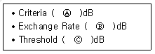
- Ⓐ : 80, Ⓑ : 10, Ⓒ : 90
- Ⓐ : 90, Ⓑ : 10, Ⓒ : 80
- Ⓐ : 80, Ⓑ : 4, Ⓒ : 90
- Ⓐ : 90, Ⓑ : 5, Ⓒ : 80
(정답률: 50%)
35. 직경분립충돌기에 관한 설명으로 틀린 것은?
- 흡입성, 흉곽성, 호흡성 입자의 크기별 분포와 농도를 계산할 수 있다.
- 호흡기의 부분별로 침착된 입자 크기를 추정할 수 있다.
- 입자의 질량크기분포를 얻을 수 있다.
- 되튐 또는 과부하로 인한 시료 손실이 비교적 정확한 측정이 가능하다.
(정답률: 52%)
36. 옥외(태양광선이 내리쬐지 않는 장소)의 온열조건이 아래와 같을 때, WBGT(℃)는?
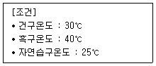
- 26.5
- 29.5
- 33
- 55.5
(정답률: 50%)
37. 여과지에 관한 설명으로 옳지 않은 것은?
- 막 여과지에서 유해물질은 여과지 표면이나 그 근처에서 채취된다.
- 막 여과지는 섬유상 여과지에 비해 공기저항이 심하다.
- 막 여과지는 여과지 표면에 채취된 입자의 이탈이 없다.
- 섬유상 여과지는 여과지 표면뿐 아니라 단면 깊게 입자상 물질이 들어가므로 더 많은 입자상 물질을 채취할 수 있다.
(정답률: 48%)
38. 어느 작업장에서 A물질의 농도를 측정 한 결과가 아래와 같을 때, 측정 결과의 중앙값(median; ppm)은?
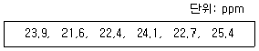
- 22.7
- 23.0
- 23.3
- 23.9
(정답률: 60%)
39. 복사선(Radiation)에 관한 설명 중 틀린 것은?
- 복사선은 전리작용의 유무에 따라 전리복사선과 비전리복사선으로 구분한다.
- 비전리복사선에는 자외선, 가시광선, 적외선 등이 있고, 전리복사선에는 X선, γ선 등이 있다.
- 비전리복사선은 에너지 수준이 낮아 분자구조나 생물학적 세포조직에 영향을 미치지 않는다.
- 전리복사선이 인체에 영향을 미치는 정도에 복사서의 형태, 조사량, 신체조직, 연령 등에 따라 다르다.
(정답률: 56%)
40. 산업안전보건법령에서 사용하는 용어의 정의로 틀린 것은?
- 신뢰도란 분석치가 참값에 얼마나 접근하였는가 하는 수치상의 표현을 말한다.
- 가스상 물질이란 화학적인자가 공기중으로 가스·증기의 형태로 발생되는 물질을 말한다.
- 정도관리란 작업환경측정·분석 결과에 대한 정확성과 정밀도를 확보하기 위하여 작업환경측정기관의 측정·분석능력을 확인하고, 그 결과에 따라 지도·교육 등 측정·분석능력 향상을 위하여 행하는 모든 관리적 수단을 말한다.
- 정밀도란 일정한 물질에 대해 반복측정·분석을 했을 때 나타나는 자료 분석치의 변동크기가 얼마나 작은가 하는 수치상의 표현을 말한다.
(정답률: 40%)
3과목: 작업환경관리대책
41. 후드 제어속도에 대한 내용 중 틀린 것은?
- 제어속도는 오염물질의 증발속도와 후드 주위의 난기류 속도를 합한 것과 같아야 한다.
- 포위식 후드의 제어속도를 결정하는 지점은 후드의 개구면이 된다.
- 외부식 후드의 제어속도를 결정하는 지점은 유해물질이 흡인되는 범위 안에서 후드의 개구 면으로부터 가장 멀리 떨어진 지점이 된다.
- 오염물질의 발생상황에 따라서 제어속도는 달라진다.
(정답률: 26%)
42. 전기 집진장치에 대한 설명 중 틀린 것은?
- 초기 설치비가 많이 든다.
- 운전 및 유지비가 비싸다.
- 가연성 입자의 처리가 곤란하다.
- 고온가스를 처리할 수 있어 보일러와 철강로 등에 설치 할 수 있다.
(정답률: 42%)
43. 후드의 유입계수 0.86, 속도압 25mmH2O일 때 후드의 압력손실(mmH2O)은?
- 8.8
- 12.2
- 15.4
- 17.2
(정답률: 31%)
44. 국소배기시스템 설계과정에서 두 덕트가 한 합류점에서 만났다. 정압(절대치)이 낮은 쪽 대 정압이 높은 쪽의 정압비가 1:1.1로 나타났을 때, 적절한 설계는?
- 정압이 낮은 쪽의 유량을 증가시킨다.
- 정압이 낮은 쪽의 덕트직경을 줄여 압력손실을 증가시킨다.
- 정압이 높은 쪽의 덕트직경을 늘려 압력손실을 감소시킨다.
- 정압의 차이를 무시하고 높은 정압을 지배정압으로 계속 계산해 나간다.
(정답률: 28%)
45. 어떤 사업장의 산화 규소 분진을 측정하기 위한 방법과 결과가 아래와 같을 때, 다음 설명 중 옳은 것은? (단, 산화규소(결정체 석영)의 호흡성 분진 노출기준은 0.045mg/m3이다.)
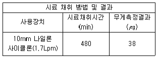
- 8시간 시간가중평가노출기준을 초과한다.
- 공기채취유량을 알 수가 없어 농도계산이 불가능하므로 위의 자료로는 측정결과를 알 수가 없다.
- 산화규소(결정체 석영)는 진폐증을 일으키는 분진이므로 흡입성 먼지를 측정하는 것이 바람직하므로 먼지시료를 채취하는 방법이 잘못됐다.
- 38㎍은 0.038mg이므로 단시간 노출 기준을 초과하지 않는다.
(정답률: 37%)
46. 마스크 본체 자체가 필터 역할을 하는 방진마스크의 종류는?
- 격리식 방진마스크
- 직결식 방진마스크
- 안면부 여과식 마스크
- 전동식 마스크
(정답률: 50%)
47. 샌드 블라스트(sand blast) 그라인더 분진 등 보통 산업분진을 닥트로 운반할 때의 최소설계속도(m/s)로 가장 적절한 것은?
- 10
- 15
- 20
- 25
(정답률: 32%)
48. 입자의 침강속도에 대한 설명으로 틀린 것은? (단, 스토크스 식을 기준으로 한다.)
- 입자직경의 제곱에 비례한다.
- 공기와 입자 사이의 밀도차에 반비례한다.
- 중력가속도에 비례한다.
- 공기의 점성계수에 반비례한다.
(정답률: 45%)
49. 어떤 공장에서 1시간에 0.2L의 벤젠이 증발되어 공기를 오염시키고 있다. 전체환기를 위해 필요한 환기량(m3/s)은? (단, 벤젠의 안전계수, 밀도 및 노출기준은 각각 6, 0.879g/mL, 0.5ppm이며, 환기량은 21℃, 1기압을 기준으로 한다.)
- 82
- 91
- 146
- 181
(정답률: 21%)
50. 환기시스템에서 포착속도(capture velocity)p 대한 설명 중 틀린 것은?
- 먼지나 가스의 성상, 확산조건, 발생원 주변 기류 등에 따라서 크게 달라질 수 있다.
- 제어풍속이라고도 하며 후드 앞 오염원에서의 기류로서 오염공기를 후드로 흡인하는데 필요하며, 방해기류를 극복해야 한다.
- 유해물질의 발생기류가 높고 유해물질이 활발하게 발생할 때는 대략 15 ~ 20m/s이다.
- 유해물질이 낮은 기류로 발생하는 도금 또는 용접 작업공정에서는 대략 0.5 ~ 1.0m/s이다.
(정답률: 43%)
51. 국소배기시설에서 필요 환기량을 감소시키기 위한 방법으로 틀린 것은?
- 후드 개구면에서 기류가 균일하게 분포되도록 설계한다.
- 공정에서 발생 또는 배출되는 오염물질의 절대량을 감소시킨다.
- 포집형이나 레시버형 후드를 사용할 때에는 가급적 후드를 배출 오염원에 가깝게 설치한다.
- 공정 내 측면부착 차폐막이나 커튼 사용을 줄여 오염물질의 희석을 유도한다.
(정답률: 51%)
52. 다음 중 도금조와 사형주조에 사용되는 후드형식으로 가장 적절한 것은?
- 부스식
- 포위식
- 외부식
- 장갑부착상자식
(정답률: 34%)
53. 차음보호구인 귀마개(Ear Plug)에 대한 설명으로 가장 거리가 먼 것은?
- 차음효과는 일반적으로 귀덮개보다 우수하다.
- 외청도에 이상이 없는 경우에 사용이 가능하다.
- 더러운 손으로 만짐으로써 외청도를 오염시킬 수 있다.
- 귀덮개와 비교하면 제대로 착용하는데 시간은 걸리나 부피가 작아서 휴대하기가 편리하다.
(정답률: 54%)
54. 760mmH2O를 mmHg로 환산한 것으로 옳은 것은?
- 5.6
- 56
- 560
- 760
(정답률: 40%)
55. 정압이 –1.6cmH2O이고, 전압이 –0.7cmH2O로 측정되었을 때, 속도압(VP; cmH2O)과 유속 (u:m/s)은?
- VP: 0.9, u: 3.8
- VP: 0.9, u: 12
- VP: 2.3, u: 3.8
- VP: 2.3, u: 12
(정답률: 23%)
56. 사이클론 설계 시 블로우다운 시스템에 적용되는 처리량으로 가장 적절한 것은?
- 처리 배기량의 1 ~ 2%
- 처리 배기량의 5 ~ 10%
- 처리 배기량의 40 ~ 50%
- 처리 배기량의 80 ~ 90%
(정답률: 46%)
57. 레시버식 캐노피형 후드의 유량비법에 의한 필요 송풍량(Q)을 구하는 식에서 “A”는? (단, q는 오염원에서 발생하는 오염기류의 양을 의미한다.)
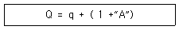
- 열상승 기류량
- 누입한계 유량비
- 설계 유량비
- 유도 기류량
(정답률: 28%)
58. 방진마스크에 대한 설명 중 틀린 것은?
- 공기중에 부유하는 미세 입자 물질을 흡입함으로써 인체에 장해의 우려가 있는 경우에 사용한다.
- 방진마스크의 종류에는 격리식과 직결식이 있고, 그 성능에 따라 특급, 1급 및 2급으로 나누어 진다.
- 장시간 사용 시 분진의 포집효율이 증가하고 압력강하는 감소한다.
- 베릴륨, 석면 등에 대해서는 특급을 사용하여야 한다.
(정답률: 48%)
59. 오염물질의 농도가 200ppm까지 도달하였다가 오염물질 발생이 중지되었을 때, 공기 중 농도가 200ppm에서 19ppm으로 감소하는 데 걸리는 시간(min)은? (단, 환기를 통한 오염물질의 농도는 시간에 대한 지수함수(1차 반응)으로 근사된다고 가정하고 환기가 필요한 공간의 부피는 3000m3, 환기 속도는 1.17m3/s이다.)
- 89
- 101
- 109
- 115
(정답률: 33%)
60. 길이가 2.4m, 폭이 0.4m인 플랜지 부착 슬롯형 후드가 바닥에 설치되어 있다. 포촉점까지의 거리가 0.5m, 제어속도가 0.4m/s일 때 필요 송풍량(m3/min)은?
- 20.2
- 46.1
- 80.6
- 161.3
(정답률: 26%)
4과목: 물리적유해인자관리
61. 전기성 안염(전광선 안염)과 가장 관련이 깊은 비전리 방사선은?
- 자외선
- 적외선
- 가시광선
- 마이크로파
(정답률: 41%)
62. 방사선의 투과력이 큰 것에서부터 작은 순으로 올바르게 나열한 것은?
- X > β > γ
- X > β > α
- α > X > γ
- γ > α > β
(정답률: 43%)
63. 소음에 의한 인체의 장해(소음성난청)에 영향을 미치는 요인이 아닌 것은?
- 소음의 크기
- 개인의 감수성
- 소음 발생 장소
- 소음의 주파수 구성
(정답률: 44%)
64. 일반적으로 눈을 부시게 하지 않고 조도가 균일하여 눈의 피로를 줄이는데 가장 효과적인 조명 방법은?
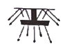
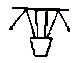
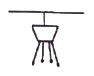
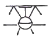
(정답률: 48%)
65. 도르노선(Dorno-ray)에 대한 내용으로 옳은 것은?
- 가시광선의 일종이다.
- 280 ~ 315Å 파장의 자외선을 의미한다.
- 소독작용, 비타민 D 형성 등 생물학적 작용이 강하다.
- 절대온도 이상의 모든 물체는 온도에 비례하여 방출한다.
(정답률: 40%)
66. 산업안전보건법령상 충격소음의 노출기준과 관련된 내용으로 옳은 것은?
- 충격소음의 강도가 120dB(A)일 경우 1일 최대 노출 회수는 1000회이다.
- 충격소음의 강도가 130dB(A)일 경우 1일 최대 노출 회수는 100회이다.
- 최대 음압수준이 135dB(A)를 초과하는 충격소음에 노출되어서는 안 된다.
- 충격소음이란 최대 음압수준에 120dB(A) 이상인 소음이 1초 이상의 간격으로 발생하는 것을 말한다.
(정답률: 43%)
67. 감압에 따른 인체의 기포 형성량을 좌우하는 요인과 가장 거리가 먼 것은?
- 감압속도
- 산소공급량
- 조직에 용해된 가스량
- 혈류를 변화시키는 상태
(정답률: 34%)
68. 작업환경측정 및 정도관리 등에 관한 고시상 고열 측정방법으로 옳지 않은 것은?
- 예비조사가 목적인 경우 검지관방시기으로 측정할 수 있다.
- 측정은 단위작업 장소에서 측정대상이 되는 근로자의 주 작업 위치에서 측정한다.
- 측정기의 위치는 바닥면으로부터 50cm 이상 150cm 이하의 위치에서 측정한다.
- 측정기를 설치한 후 충분히 안정화 시킨 상태애서 1일 작업시간 중 가장 높은 고열에 노출되는 1시간을 10분 간격으로 연속하여 측정한다.
(정답률: 25%)
69. 지적환경(optimum working environment)을 평가하는 방법이 아닌 것은?
- 생산적(productive) 방법
- 생리적(physiological) 방법
- 정신적(psychological) 방법
- 생물역학적(biomechanical) 방법
(정답률: 31%)
70. 한랭작업과 관련괸 설명으로 옳지 않은 것은?
- 저체온증은 몸의 심부온도가 35℃이하로 내려간 것을 말한다.
- 손가락의 온도가 내려가면 손동작의 정밀도가 떨어지고 시간이 많이 걸려 작업능률이 저하된다.
- 동상은 혹심한 한냉에 노출됨으로써 피부 및 피하조직 자체가 동결하여 조직이 손상되는 것을 말한다.
- 근로자의 발이 한랭에 장기간 노출되고 동시에 지속적으로 습기나 물에 잠기게 되면 ‘선단자람증’의 원인이 된다.
(정답률: 55%)
71. 다음 방사선 중 입자방사선으로만 나열된 것은?
- α선, β선, γ선
- α선, β선, X선
- α선, β선, 중성자
- α선, β선, γ선, X선
(정답률: 44%)
72. 다음 계측기기 중 기류 측정기가 아닌 것은?
- 흑구온도계
- 카타온도계
- 풍차풍속계
- 열선풍속계
(정답률: 30%)
73. 다음은 빛과 밝기의 단위를 설명한 것으로 ㉠, ㉡에 해당하는 용어로 옳은 것은?
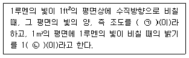
- ㉠ : 캔들(Candle), ㉡ : 럭스(Lux)
- ㉠ : 럭스(Lux), ㉡ : 캔들(Candle)
- ㉠ : 럭스(Lux), ㉡ : 푸트캔들(Footcandle)
- ㉠ : 푸트캔들(Footcandle), ㉡ : 럭스(Lux)
(정답률: 39%)
74. 고압환경에서의 2차적 가압현상(화학적 장해)에 의한 생체 영향과 거리가 먼 것은?
- 질소 마취
- 산소 중독
- 질소기포 형성
- 이산화탄소 중독
(정답률: 35%)
75. 다음 중 공장내부에 기계 및 설비가 복잡하게 설치되어 있는 경우에 작업장 기계에 의한 흡음이 고려되지 않아 실제흡음보다 과소평가되기 쉬운 흡음 측정방법은?
- Sabin method
- Reverberation time method
- Sound power method
- Loss due to distance method
(정답률: 35%)
76. 작업자 A의 4시간 작업 중 소음노출량이 76%일 때, 측정시간에 있어서이 평균치는 약 몇 dB(A)인가?
- 88
- 93
- 98
- 103
(정답률: 34%)
77. 진동이 인체에 미치는 영향에 관한 설명으로 옳지 않은 것은?
- 맥박수가 증가한다.
- 1 ~ 3Hz에서 호흡이 힘들고 산소소비가 증가한다.
- 13Hz에서 허리, 가슴 및 등 쪽에 감각적으로 가장 심한 통증을 느낀다.
- 신체의 공진형상은 앉아 있을 때가 서 있을 때보다 심하게 나타난다.
(정답률: 26%)
78. 공장 내 각기 다른 3대의 기계에서 각각 90dB(A), 95dB(A), 88dB(A)의 소음이 발생된당면 동시에 기계를 가동시켰을 때의 합산 소음(dB(A))은 약 얼마인가?
- 96
- 97
- 98
- 99
(정답률: 39%)
79. 사람이 느끼는 최소 진동역치로 옳은 것은?
- 35 ± 5dB
- 45 ± 5dB
- 55 ± 5dB
- 65 ± 5dB
(정답률: 41%)
80. 산업안전보건법령상 적정공기의 범위에 해당하는 것은?
- 산소농도 18% 미만
- 일산화탄소 농도 50ppm 미만
- 탄산가스 농도 10% 미만
- 황화수소 농도 10ppm 미만
(정답률: 42%)
5과목: 산업독성학
81. 규폐증(silicosis)에 관한 설명으로 옳지 않은 것은?
- 직업적으로 석영 분진에 노출될 때 발생하는 진폐증의 일종이다.
- 석면의 고농도분진을 단기적으로 흡입할 때 주로 발생되는 질병이다.
- 채석장 및 모래분사 작업장에 종사하는 작업자들이 잘 걸리는 폐질환이다.
- 역사적으로 보면 이집트의 미이라에서도 발견되는 오래된 질병이다.
(정답률: 48%)
82. 입자상 물질의 하나인 흄(fume)의 발생기전 3단계에 해당하지 않는 것은?
- 산화
- 입자화
- 응축
- 증기화
(정답률: 35%)
83. 다음 중 20년간 석면을 사용하여 자동차 브레이크 라이닝과 패드를 만들었던 근로자가 걸릴 수 있는 대표적인 질병과 거리가 가장 먼 것은?
- 폐암
- 석면폐증
- 악성중피종
- 급성골수성백혈병
(정답률: 51%)
84. 유해물질의 생체내 배설과 관련된 설명으로 옳지 않은 것은?
- 유해물질은 대부분 위(胃)에서 대사된다.
- 흡수된 유해물질은 수용성으로 대사된다.
- 유해물질의 분포량은 혈중농도에 대한 투여량으로 산출된다.
- 유해물질의 혈장농도가 50%로 감소하는데 소요되는 시간을 반감기라고 한다.
(정답률: 44%)
85. 다음 중 조혈장기에 장해를 입히는 정도가 가장 낮은 것은?
- 망간
- 벤젠
- 납
- TNT
(정답률: 17%)
86. 화학물질을 투여한 실험동물의 50%가 관찰 가능한 가역적인 반응을 나타내는 양을 의미하는 것은?
- ED50
- LC50
- LE50
- TE50
(정답률: 39%)
87. 금속의 독성에 관한 일반적인 특성을 설명한 것으로 옳지 않은 것은?
- 금속의 대부분은 이온상태로 작용된다.
- 생리과정에 이온상태의 금속이 활용되는 정도는 용해도에 달려있다.
- 금속이온과 유기화합물 사이의 강한 결합력은 배설율에도 영향을 미치게 한다.
- 용해성 금속염은 생체 내 여러 가지 물질과 작용하여 수용성 화합물로 전환된다.
(정답률: 38%)
88. 작업자가 납 흄에 장기간 노출되어 혈액 중 납의 농도가 높아졌을 때 일어나는 혈액 내 현상이 아닌 것은?
- K+와 수분이 손실된다.
- 삼투압에 의하여 적혈구가 위축된다.
- 적혈구 생존시간이 감소한다.
- 적혈구내 전해질이 급격히 증가한다.
(정답률: 38%)
89. 화학물질의 생리적 작용에 의한 분류에서 종말기관지 및 폐포점막 자극제에 해당되는 유해가스는?
- 불화수소
- 이산화질소
- 염화수소
- 아황산가스
(정답률: 33%)
90. 단시간노출기준(STEL)은 근로자가 1회 몇 분 동안 유해인자에 노출되는 경우의 기준을 말하는가?
- 5분
- 10분
- 15분
- 30분
(정답률: 48%)
91. 폴리비닐 중합체를 생산하는 데 많이 쓰이며, 간장해와 발암작용이 있다고 알려진 물질은?
- 납
- PCB
- 염화비닐
- 포름알데히드
(정답률: 42%)
92. 알레르기성 접촉 피부염에 관한 설명으로 옳지 않은 것은?
- 알레르기성 반응은 극소량 노출에 의해서도 피부염이 발생할 수 있는 것이 특징이다.
- 알레르기 반응을 일으키는 관련세포는 대식세포, 림프구, 랑거한스 세포로 구분된다.
- 항원에 노출되고 일정시간이 지난 후에 다시 노출되었을 때 세포매개성 과민반응에 의하여 나타나는 부작용의 결과이다.
- 알레르기원에 노출되고 이 물질이 알레르기원으로 작용하기 위해서는 일정기간이 소요되며 그 기간을 휴지기라 한다.
(정답률: 43%)
93. 망간중독에 고나한 설명으로 옳지 않은 것은?
- 호흡기 노출이 주경로이다.
- 언어장애, 균형감각상실 등의 증세를 보인다.
- 전기용접봉 제조업, 도자기 제조업에서 빈번하게 발생되다.
- 만성중독은 3가 이상의 망간화합물에 의해서 주로 발생한다.
(정답률: 41%)
94. 남성 근로자의 생식독성 유발요인이 아닌 것은?
- 풍진
- 흡연
- 망간
- 카드뮴
(정답률: 49%)
95. 연(납)의 인체 내 침입경로 중 피부를 통하여 침입하는 것은?
- 일산화연
- 4메틸연
- 아질산연
- 금속연
(정답률: 36%)
96. 산업역학에서 상대위험도의 값이 1인 경우가 의미하는 것은?
- 노출되면 위험하다.
- 노출되어서는 절대 안된다.
- 노출과 질병발생 사이에는 연관이 없다.
- 노출되면 질병에 대하여 방어효과가 있다.
(정답률: 45%)
97. 유해물질과 생물학적 노출지표와의 연결이 잘못된 것은?
- 벤젠 – 소변 중 페놀
- 크실렌 – 소변 중 카테콜
- 스티렌 – 소변 중 만델린산
- 퍼클로로에틸렌 – 소변 중 삼연화초산
(정답률: 34%)
98. 다음 설명에 해당하는 중금속의 종류는?
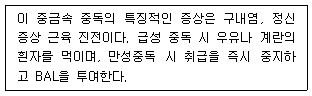
- 납
- 크롬
- 수은
- 카드뮴
(정답률: 48%)
99. 납에 노출된 근로자가 납중독 되었는지를 확인하기 위하여 소변을 시료로 채취하였을 경우 측정할 수 있는 항목이 아닌 것은?
- 델타-ALA
- 납 정량
- coproporphyrin
- protoporphyrin
(정답률: 34%)
100. 다음 중 중추신경 억제작용이 가장 큰 것은?
- 알칸
- 에테르
- 알코올
- 에스테르
(정답률: 34%)